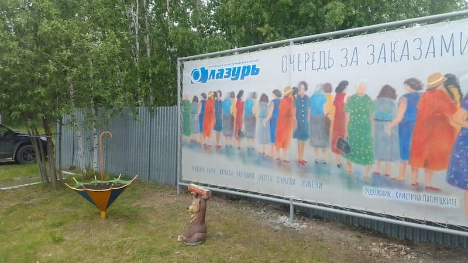
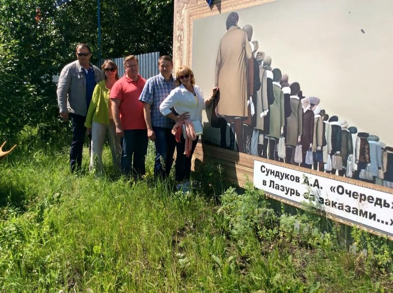
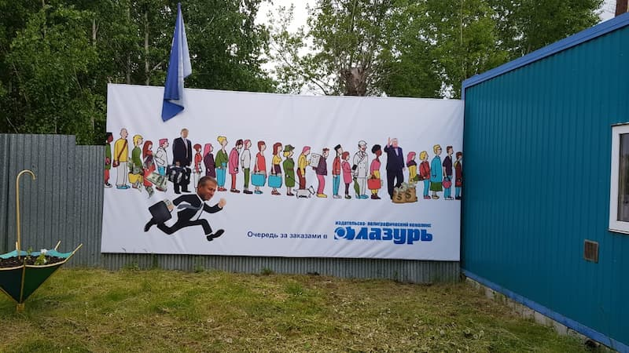
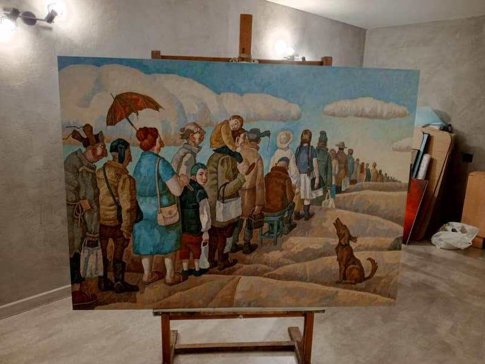
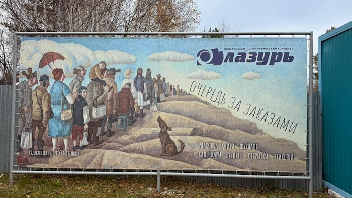
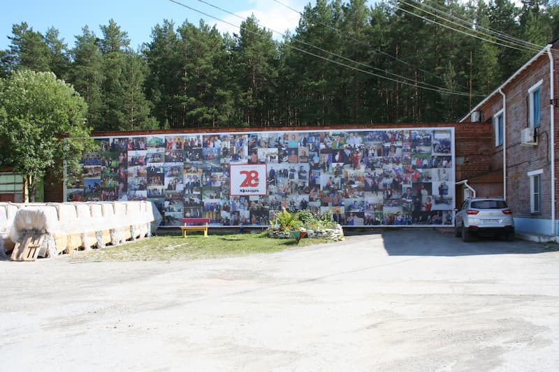

Очередь как Арт-Объект: Уникальная Традиция Баннеров от Типографии «Лазурь» в Екатеринбурге
Ежегодный Художественный Баннер – Визитная Карточка
Нашего Полиграфического Предприятия
В типографии «ИПК Лазурь» есть добрая и уже ставшая знаменитой традиция. Каждый год перед входом на наше предприятие появляется
новый, большой, яркий баннер. И на нем всегда изображена одна и та же тема, но в
абсолютно разной художественной интерпретации – очередь в типографию «Лазурь».

Эта необычная акция давно вышла за рамки простой наружной рекламы и превратилась
в ожидаемое событие для клиентов, сотрудников и всех, кто проходит мимо. Как рассказывает владелица
типографии, Татьяна Александровна Деева, началось все с картины, увиденной в
Русском музее, – работы художника Сундукова. Именно она вдохновила на создание первого баннера с темой
очереди.

Тщательный Отбор Художника: Сердце Традиции
Каждый год выбор художника для создания нового баннера – процесс очень
ответственный и волнительный. «Мы очень тщательно выбираем художника», – подчеркивает Татьяна
Александровна. Задача – найти мастера, чей стиль и видение смогут не просто изобразить очередь, но и
наполнить ее актуальным смыслом, эмоцией, а порой и доброй иронией.
Начало: Первый баннер родился под впечатлением от классики.
Эволюция: Последовали очереди, где среди ожидающих гостей появлялись узнаваемые
персонажи – например, Жириновский и Трамп, что неизменно вызывало живую реакцию и обсуждения.

Поиск Идеала: Иногда поиск «того самого» художника занимает немало времени.
«Очень долго искали художника для нового баннера…», – вспоминает Татьяна Александровна.
Находка: И такой мастер был найден – прекрасный Сергей Меренков. Он специально
для «Лазури» написал картину, которая и легла в основу текущего баннера-очереди.

Персональные выставки.
2017г. Владивосток. Приморская государственная картинная галерея. «Холст. Мысли»
2017г. Париж. Галерея «I-Gallery». «Дураки и дороги».
2017г. Берлин. Галерея «Ars pro Dono». «Жить с удовольствием»
2018г. Артём. ВЦ «Галерея». «Грачи прилетели».
2019г. Берлин. Галерея «Ars pro Dono». «Душа нараспашку».
2019г. Голландия. Нумансдорп. Галерея « First Class Art». «Ветер в голове».
2020. Владивосток. Музей современного искусства «АртЭтаж». «Привязанность к корням».
2017г. Париж. Галерея. «I-Gallery». «Жизнь как театр».
2017г. Санкт-Петербург. Выставочный центр Союза художников. «Портрет
кошки».
2017г. Китай. Чаньчунь. Международный форум «Шёлковый путь».
2017г. Владивосток. Международная выставка – конкурс. «Art – Vladivostok».
(первая премия в номинации «Живопись» в категории «Профессиональные художники»).
2018г. Париж. Grand Pale. «Салон Французских художников» Mention (приз
зрительских симпатий).
2018г. Москва. Московский Дом Художника. Вторая Международная выставка
«Современный авангард». Первое место в номинации «Жанровый эксперимент».
2018г. Китай. Чаньдун. «Голос Волги»
2018г. Китай. Харбин.
2018г. Берлин. Арт – фестиваль «Денница». Третье место.
2018г. Москва. Международная выставка – конкурс. «Российская премия
искусств». Лауреат первой степени.
2018г. Голландия. Нумансдорп. Галерея «First Class Art».
2018г. Минск. Белорусская неделя искусств. «Belarus ArtWeek». Первое место.
2018г. Санкт – Петербургская неделя искусств. Первое место в номинации
«Примитивизм».
2018г. Липецкая неделя искусств. Первое место.
2018г. Владивосток. Приморская государственная картинная галерея.
«Нарисованный Владивосток».
2018г. Пекин. Неделя искусств в Китае. Первое место.
2018г. Российская неделя искусств в Венгрии. Третье место.
2018г. Санкт – Петербург. Союз художников. «Портрет кошки».
2018г. Москва. Российская неделя искусств.
2018г. Санкт – Петербург. Музей искусства Санкт – Петербурга 20 – 21 веков.
«Радикальная текучесть. Гротеск в искусстве»
2018г. Владивосток. Союз художников России. Выставка посвящённая в 80 –
летию Приморского Краевого отделения ВТОО «Союз художников России» и 80 –летию Приморского края.
2018г. Владивосток. Саммит. Выставка произведений искусства стран Северо –
Восточной Азии.
Очередь Разная – Реакции Разные!
«Очереди наши все разные и очень по-разному на них реагируют…», – замечает Татьяна Александровна. И это
неудивительно! Ведь и время меняется, и общественные настроения, и сам взгляд художника уникален. Одни
баннеры вызывают улыбку, другие – задумчивость, третьи – оживленные споры. Но неизменно одно: они
привлекают внимание и становятся темой для разговоров, выполняя свою задачу – напомнить, что типография «Лазурь» всегда открыта для клиентов. «Мы рады любым заказчикам!!!»

Будущее Традиции: Новые Идеи и Улыбки
Традиция живет и развивается. «На следующий год уже есть новые идеи нашего баннера…», – с энтузиазмом
делится планами Татьяна Александровна. Можно не сомневаться, что очередное воплощение темы «очередь»
снова принесет много удивления, обсуждений и, конечно же, улыбок всем, кто его
увидит.

«ИПК Лазурь»: Где Печать Встречается с Творчеством
Эта традиция – яркий пример того, что для нас полиграфия и печать – это не просто технологический
процесс. Это пространство для творчества, самовыражения и диалога с городом. Мы гордимся нашей
уникальной традицией и приглашаем вас стать нашими заказчиками! У вас будет возможность не только
воспользоваться нашими профессиональными услугами, но и своими глазами увидеть наш знаменитый
приветственный баннер, сделать с ним фото на память и стать частью нашей творческой истории.